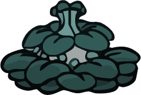
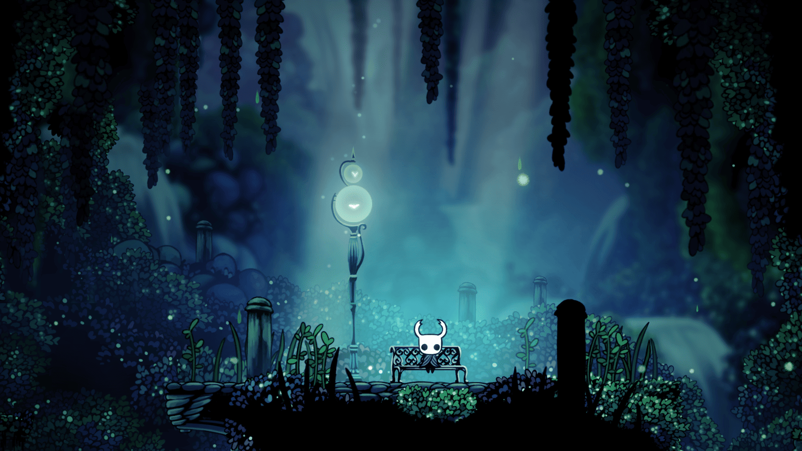
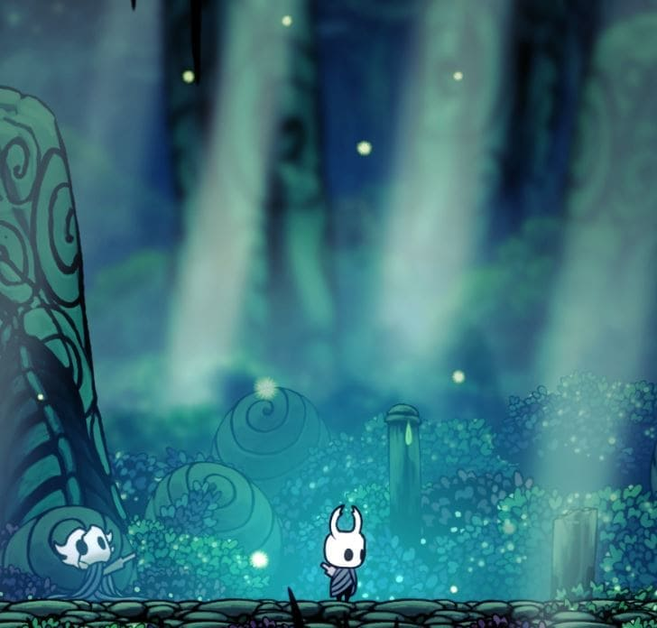
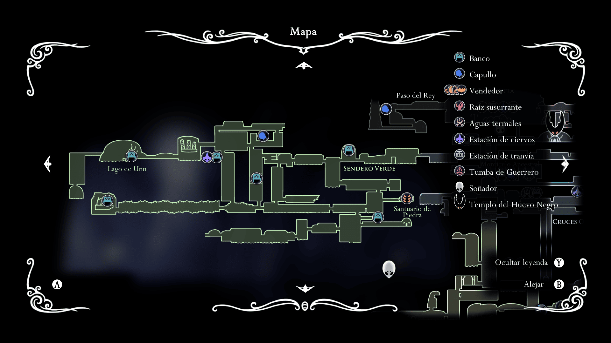
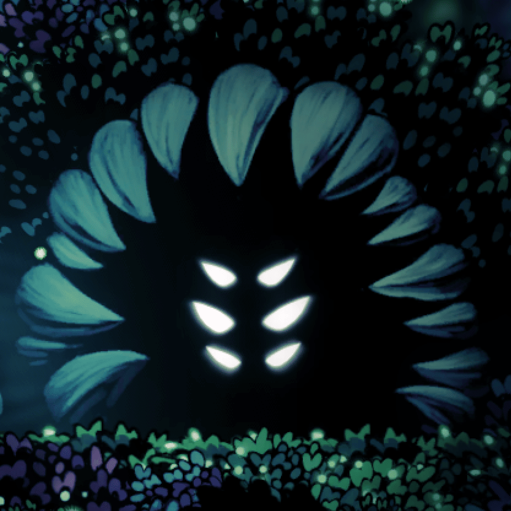
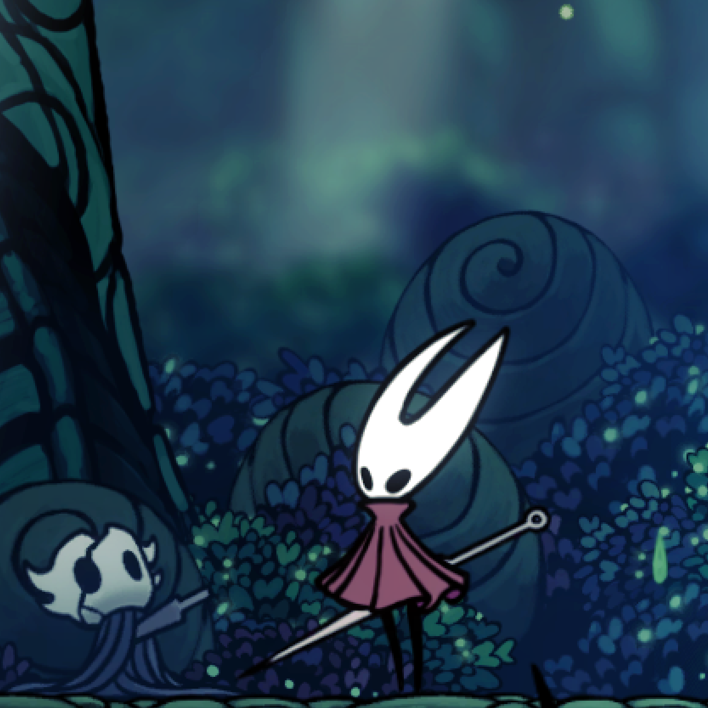
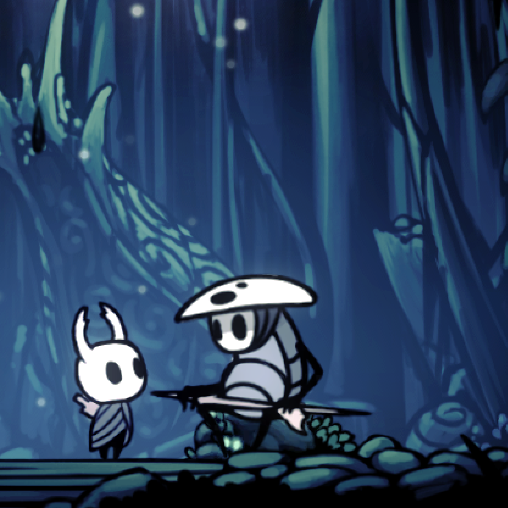
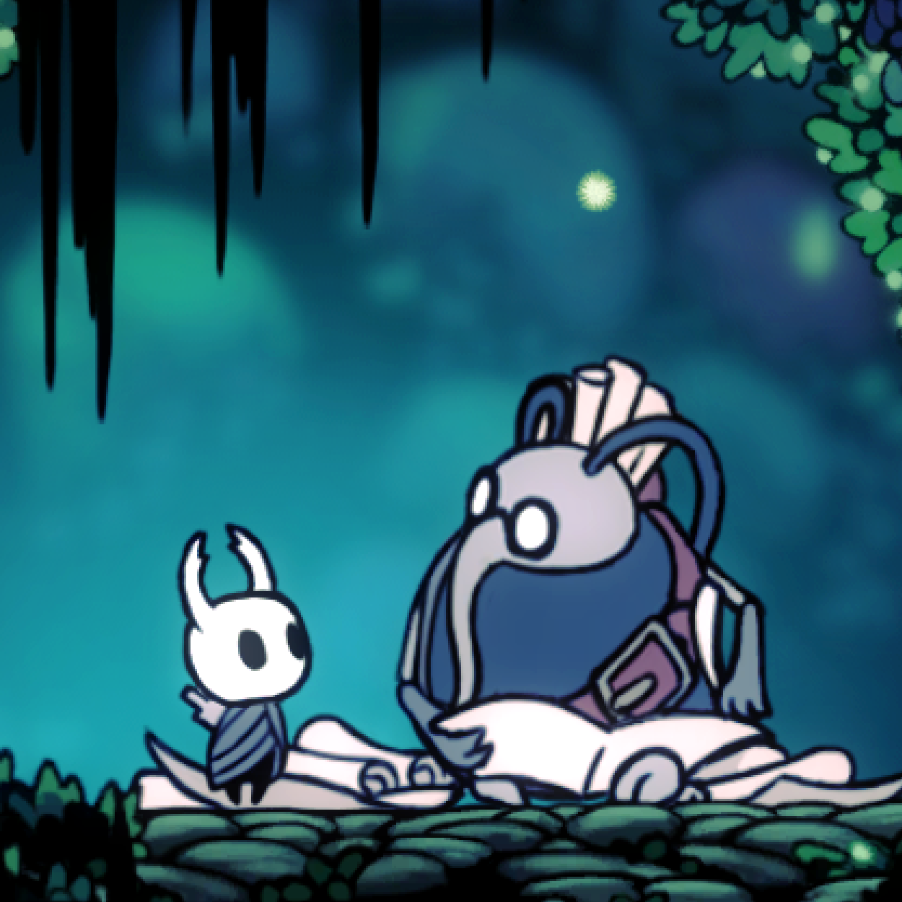
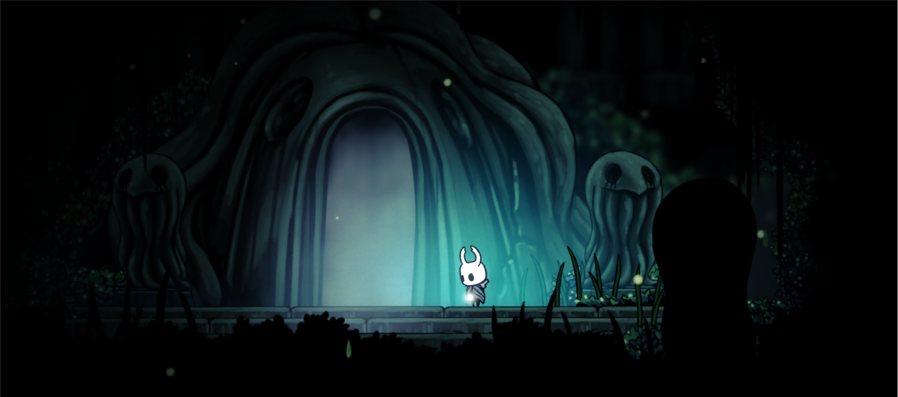
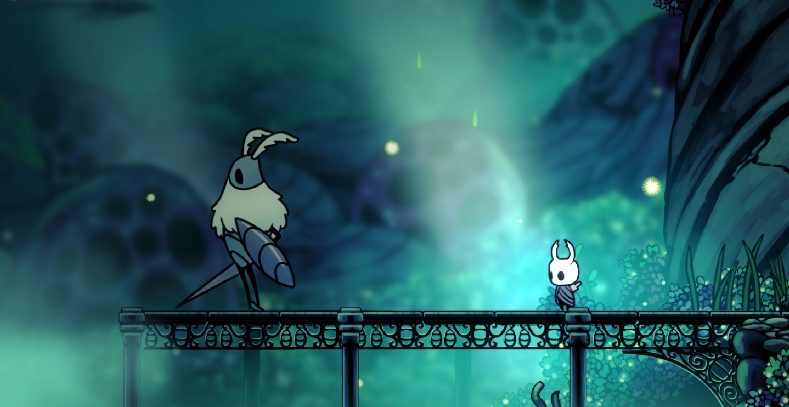

Greenpath
Reproductor de música


Sendero Verde es una región de Hallownest cubierta de vegetación, musgo y enormes cavernas llenas de vida.
Sus caminos están rodeados de plantas, ruinas antiguas y peligrosos lagos de ácido.
Sin embargo, detrás de su apariencia natural se esconde la historia de una antigua tribu y de una misteriosa deidad.
Mucho antes de la caída del reino, esta región fue el hogar de los Musgosos (Mosskin), criaturas que vivían en armonía con la naturaleza y veneraban a Unn, un ser superior que dio origen a la vegetación y a los habitantes de estas tierras a través de sus sueños.
Los seguidores de Unn construyeron santuarios y dejaron inscripciones que cuentan parte de su historia. Aunque permitieron que el Rey Pálido construyera caminos por su territorio, conservaron sus propias creencias y protegieron las tierras que consideraban sagradas.


Enclenque insignificante... Te acercas sin temor. ¿Eres un cazador como yo?
¿Sientes la necesidad de acechar, de matar, de entender?
¡Si es así, cógelo! Mi diario. Te ayudará. Al principio te será difícil comprenderlo, pero un cazador experimentado logrará entender sus palabras.

He visto a esta pequeña y ágil criatura. Pensé que era una presa y me abalancé sobre ella, pero, rápida como un rayo,
me apuñaló con su aguijón volante y se fue disparada.
¿Podría ser... una cazadora?

Oh, ¡hola! Parece que ambos nos hemos alejado del sendero.¡Me cuesta creer que esos viejos y sucios caminos lleven a un lugar tan vivo y exuberante!
He visto a un tipo extraño ahí fuera. Parecía bastante ensimismado con el lago.

¡Un visitante! ¿Qué te trae por aquí, pequeña larva? ¿Quizás, como yo, tienes el gusanillo de descubrir nuevas cosas?
Soy Sheo y en otra vida fui Maestro de aguijones. Sí, mi única meta era hacerme más fuerte y perfeccionar mis habilidades con el aguijón.

Hmm? Ah, hola. ¿Has venido a explorar estas preciosas aunque viejas ruinas? Si es así, ignórame.
Me encanta explorar. Perderse y volver a encontrar el camino es un placer como ningún otro.
Tú y yo tenemos una suerte increíble.
Soy cartógrafo, y ahora mismo estoy dibujando esta zona.
¿Te gustaría comprar lo que llevo hasta ahora?

A veces es difícil detectarlo entre el follaje. Cuando menos te lo esperas aparece a tu lado y carga todo contra ti.
Un oscuro santuario lleno de espinas al sureste de Sendero Verde. Se recomienda comprar antes Linterna de lumélula. Aquí se encuentra la tumba de Sin Ojos.

Un lago de ácido que se encuentra al noroeste de Sendero Verde. Después de conseguir la Lágrima de Isma, el jugador podrá nadar hacia el otro lado y encontrarse con Unn.
